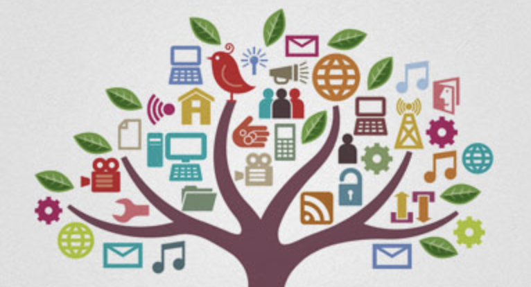
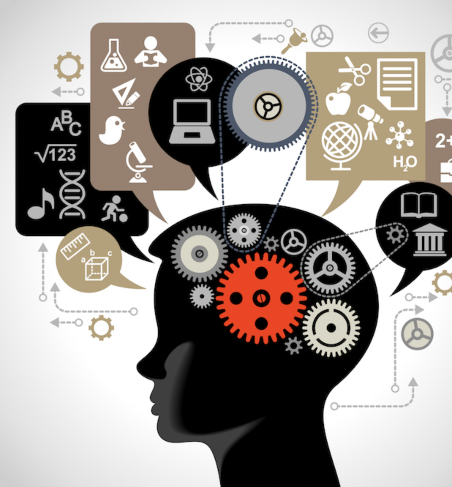

Impact of technology in our daily life
Technology is the practical application of scientific knowledge, whether in industry or in our daily lives. So, in general, we use technology whenever we apply our scientific knowledge to achieve a specific goal.It enhances the usefulness of goods and services and helps in creating value. It helps make any work easier and helps us in multiple ways. Technology has both positive and negative effects.
Advantages Of Technology

The Advantage of Technology are:
Increase production: Technology allows for multiple increases in production. Human efforts and working energy are limited. However, with machinery, production can be multiplied many times over because machines can perform better. Technology has enabled people to profit multiple times over.
Saves time: In today's world, time is money. Thus, technology saves time while increasing efficiency and productivity. We can finish large tasks in less time. Technology helps to save a lot of time when doing things that humans cannot do.
Technology helps improve services:In case we buy a television,and it stops after a few days. We don't have to be worried because the TV is still under warranty. We can simply contact the company or its customer service department to have our television repaired. Things have become so simple with just a phone call or a mail.
Reduces cybercrime and online crime: Today's technology is so advanced that there are apps that can detect fraud in seconds. Cyber-attacks have decreased as advanced algorithms have been developed to detect any type of cybercrime.
Disadvantage of Technology

The Disadvantage of Technology are:
Data security: Our data is no longer safe with us, as there are people who understand how to use technology and have turned into hackers. They can hack our computers, bank accounts, office data, and much more using trying to cut technology while sitting at home. Sharing even a single piece of information on the internet clearly increases the chances of data falling into the hands of criminals and hackers.
Health issues: Today's society is so completely immersed in technology that it has suffered from the lack of its own health. This has a variety of impacts for their health. They suffer from eyesight problems, fatness, sleeplessness, and a variety of other illnesses.
Unemployment: The advancement of technology has resulted in a significant increase in unemployment. People are largely dependent on computers for all of their duties, as well as for their survival.
Addiction: some people have an addiction to playing online games, watching a movie every night.Some people develop an addiction to online gambling, which has a variety of impacts. And apart from it though, technology is a bad thing.